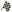
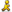
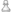

in the title of a
keyword description denotes that this keyword is an extension, it is not
part of the CQL standard.
in the title of a
keyword description denotes that this keyword is an extension, it is not
part of the CQL standard.
Any CQL script must have exactly one match list at top level. The match list contains keyword parameters that control the matching of each game. The match list contains zero or more position lists. (Note that the CQL standard requires at least one position list.) A game will be matched only if all conditions in the match list are fullfilled. If positions lists are given, each of which must match at least one position in the game in order for the match list to match that game. Scidb allows an additional feature: the match list may contain logical keywords (:and, :or, :not) with sub-matches.
Note that most examples on this page are not conform to the CQL standard,
you have to insert an empty position list (position) to build
a script which complies with the standard.
The symbol in the title of a
keyword description denotes that this keyword is an extension, it is not
part of the CQL standard.
Takes a list of sub-match lists and matches only if each of them match. Note that a sub-match cannot contain position matches.
Example:
(match
:and (
(match :isshufflechess)
(match :ischess960 :not))))Search for Shuffle Chess games, not including Chess 960 positions. This example is identical to the following:
(match :isshufflechess :not (match :ischess960))This keyword seems to be superfluous, but it may be useful inside :or or :and.
This keyword can be used in two forms: either it is included in a match list, or it has a sub-match list as parameter. In former case match if the containing match list would not match without the :not. In latter case: negate the result of the sub-match list match. The former form is defined only to be conform with CQL standard of keyword :not of position match.
Example:
(match :isshufflechess :not)
Search for games which do not start with a Shuffle Chess position. This example may be written in the second form:
(match :not (match :isshufflechess))
Takes a list of sub-match lists and matches if at least one of them matches. Note that a sub-match cannot contain position matches.
Example:
Search for world championchip games.
Search for games where the event matches given pattern.
This takes one parameter, either a double-quoted pattern, or a un-quoted string. See :player for a detailed description.
Match all games where the country of the event is matching one of the
countries in the given comma-separated list. Country is either an
IOC country code ,
or an ISO 3166-2 country code .
Furthermore the special country codes UNK (IOC form),
and xx (ISO 3166-2 form) are matching games where the country
of the event is unknown.
The CQL editor provides a feature for the input of country codes.
Examples:
:eventcountry dk,fi,no,se
Search for games played in Scandinavian events.
:eventcountry xx
Search for games where the country of the event is unknown.
See also: :site.
This takes a range specifier denoting the range of dates that the event of the game must match.
For a detailed description of the date range see :date.
Match all games where the event mode is matching one of the modes in the given comma-separated list.
The event mode is one of:
unknown |
Event mode is unknown | |
otb |
 |
Over the board |
corr |
 |
Correspondence |
email |
||
internet |
Internet Chess Server | |
tele |
 |
Telecommunication |
analysis |
 |
Analysis |
composition |
 |
Composition |
The CQL editor provides a feature for the input of event modes.
Example:
:eventmode corr,email
Search for correspondence chess games, or games played via E-mail.
Match all games where the event type is matching one of the types in the given comma-separated list.
The event type is one of:
unknown |
Event type is unknown | |
game |
 |
Individual Game |
match |
 | Match |
tourn |
 |
Round Robin |
knockout |
Knockout Tournament | |
swiss |
 |
Swiss-System Tournament |
team |
 |
Team Tournament |
schev |
 |
Scheveningen-System Tournament |
simul |
 |
Simultaneous Tournament |
The CQL editor provides a feature for the input of event types.
Example:
:eventtype tourn,swiss
Search for games where the site of the event matches given pattern.
This takes one parameter, either a double-quoted pattern, or a un-quoted string. See :player for a detailed description.
See also: :eventcountry.
Search for games where the time mode is matching one of the modes in the given comma-separated list.
Time mode is one of:
unknown |
Time mode is unknown | |
normal |
 |
Normal |
rapid |
 | Rapid |
blitz |
 |
Blitz |
bullet |
Bullet | |
corr |
Correspondence |
The CQL editor provides a feature for the input of time modes.
Example:
:timemode blitz,bullet
Search for blitz and bullet games.
Search for games where one of the players is born in a year between the given ranges (⇒ range specifiers).
Example:
:birthyear 1990 unlimited
Search for games with at least one younger player, born 1990 or later.
See also: :whitebirthyear, :blackbirthyear, :deathyear.
Search for games where the black player was born in a year between the given ranges (⇒ range specifiers).
See also: :whitebirthyear, :birthyear, :blackdeathyear, :whitedeathyear, :deathyear.
Match all games where the nationality of the black player is matching one of
the countries in given comma-separated list. A country will be specified either
as IOC country code ,
or ISO 3166-2 country code .
Furthermore the special country codes UNK (IOC form),
and xx (ISO 3166-2 form) are matching games where the country
of the black player is unknown.
The CQL editor provides a feature for the input of country codes.
For examples see :country.
See also: :country, :whitecountry.
This keyword takes a range specifier; the ELO of the black player must lie within its range.
See also: :whiteelo, :elo, :blackrating.
Search for games where the black player died in a year between the given ranges (⇒ range specifiers).
See also: :whitedeathyear, :deathyear, :blackbirthyear, :whitebirthyear, :birthyear.
Match all games where the gender of the black player is matching given gender.
Gender is one of f (female), m (male, man), or
x (unknown). For female also w (woman) may be used.
Example:
:blackgender f
Only search for games where the black player is female.
:blackgender x
Only search for games where the gender is unknown for at least one player.
See also: :whitegender, :gender.
Search for games where the black player is an engine.
See also: :iscomputer, :whiteiscomputer.
Search for games where the black player is a human.
See also: :ishuman, :whiteishuman.
Search for games where the black player matches given name.
This takes one parameter, either a double-quoted pattern, or a un-quoted string. See :player for a detailed description.
See also: :player, :whiteplayer.
Match all games where the given rating is between given score range of the black player. The first parameter is the rating type, then the score range follows. For a detailed description see :rating.
See also: :whiterating, :rating.
Match all games where the title of the black player is matching one of the titles in the given comma-separated list. See :title for a more detailed description.
See also: :whitetitle, :title.
Match all games where the nationality one of the players is matching any
country in given comma-separated list. Country is either an
IOC country code ,
or an ISO 3166-2 country code .
Furthermore the special country codes UNK (IOC form),
and xx (ISO 3166-2 form) are matching games where the nationality
of one player is unknown.
The CQL editor provides a feature for the input of country codes.
Examples:
:country GER
:country de
In both examples, match all games where one of the players has a German nationality.
See also: :whitecountry, :blackcountry.
Search for games where one of the players died in a year between the given ranges (⇒ range specifiers).
Example:
:deathyear 1800 1950
Search for games with ancient players, at least one of them died between 1800 and 1950.
See also: :whitedeathyear, :blackdeathyear, :whitebirthyear, :blackbirthyear, :birthyear.
This parameter expects a range specifier; the ELO of at least one of the players must lie within the specified range.
Siehe auch: :blackelo, :whiteelo, :rating.
Match all games where the gender of one player is matching given gender.
Gender is one of f (female), m (male, man), or
x (unknown). For female also w (woman) may be used.
For examples see :blackgender.
See also: :blackgender, :whitegender.
Search for games where one of the players is a engine.
See also: :whiteiscomputer, :blackiscomputer.
Search for games where one of the players is a human.
See also: :whiteishuman, :blackishuman.
Search for games where one of the players matches given name. This takes one parameter, either a double-quoted pattern, or a un-quoted string.
Un-quoted string: Only games at least one of whose players names has as sub-string the given parameter will match. The string matching is case-insensitive. This form complies with the CQL standard.
Example:
:player coeff
Match all games where one of the player names has as sub-string "coeff".
Double-quoted pattern: Only games at least one of whose players names are matching the pattern will be found. For pattern matching see Pattern Matching.
 The form with double-quoted patterns does not comply with the CQL standard.
The form with double-quoted patterns does not comply with the CQL standard.
Examples:
:player "*coeff*"
This is identical to preceding example (un-quoted string).
For more examples see Pattern Matching.
See also: :whiteplayer, :blackplayer.
Match all games where one of the players has a score of given rating type which is between the specified score range. The first parameter is the rating type, then the score range follows.
Rating is one of:
ELO |
FIDE Rating |
DWZ |
German Rating (Deutsche Wertungszahl) |
ECF |
English Chess Federation |
Rapid |
English Chess Federation Rapid Rating |
ICCF |
International Correspondence Chess Federation |
USCF |
United States Chess Federation |
IPS |
Individual Player Strength (Chess 960 Rating) |
Rating |
Any other rating type |
Example:
:rating ELO 2000 3000
Match all games where one of the players has an ELO rating between 2000 and 3000.
See also: :whiterating, :blackrating.
Match all games where any title in the given comma-separated list is matching the title of one player. Title is one of:
None | No title |
GM | Grandmaster (FIDE) |
IM | International Master (FIDE) |
FM | Fide Master (FIDE) |
CM | Candidate Master (FIDE) |
WGM | Woman Grandmaster (FIDE) |
WIM | Woman International Master (FIDE) |
WFM | Woman Fide Master (FIDE) |
WCM | Woman Candidate Master (FIDE) |
HGM | Honorary Grandmaster (FIDE) |
CGM | Correspondence Grandmaster (ICCF) |
CIM | Correspondence International Master (ICCF) |
CLGM | Correspondence Lady Grandmaster (ICCF) |
CILM | Correspondence Lady International Master (ICCF) |
CSIM | Correspondence Senior International Master (ICCF) |
Examples:
:title GM,IM
Search for all games with al least one GM or IM.
:title None
Search for all games where both don't have a title.
Search for games where the white player was born in a year between the given ranges (⇒ range specifiers).
See also: :blackbirthyear, :birthyear, :whitedeathyear, :blackdeathyear, :deathyear.
Match all games where the nationality of the white player is matching any country
in given comma-separated list. Country is either an
IOC country code ,
or an ISO 3166-2 country code .
Furthermore the special country codes UNK (IOC form),
and xx (ISO 3166-2 form) are matching games where the country
of the white player is unknown.
The CQL editor provides a feature for the input of country codes.
For examples see :country.
See also: :blackcountry, :country.
Search for games where the white player died in a year between the given ranges (⇒ range specifiers).
See also: :blackdeathyear, :deathyear, :whitebirthyear, :blackbirthyear, :birthyear.
This keyword takes a range specifier; the ELO of the white player must lie within its range.
See also: :blackelo, :elo, :whiterating.
Match all games where the gender of the white player is matching given gender.
Gender is one of f (female), m (male, man), or
x (unknown). For female also w (woman) may be used.
For examples see :blackgender.
See also: :blackgender, :gender.
Search for games where the white player is an engine.
See also: :iscomputer, :blackiscomputer.
Search for games where the white player is a human.
See also: :ishuman, :blackishuman.
Search for games where the white player matches given name.
This takes one parameter, either a double-quoted pattern, or a un-quoted string. See :player for a detailed description.
See also: :blackplayer, :player.
Match all games where the given rating is between given score range of the white player. The first parameter is the rating type, then the score range follows. For a detailed description see :rating.
See also: :blackrating, :rating.
Match all games where the title of the white player is matching one of the titles in the given comma-separated list. See :title for a more detailed description.
See also: :blacktitle, :title.
| • | :annotator |
| • | :date |
| • | :eco |
| • | :gamenumber |
| • | :hasmarkers |
| • | :hasspecialmarkers |
| • | :plycount |
| • | :result |
| • | :termination |
| • | :variant |
| • | :year |
Search for games where the annotator matches given name.
This takes one parameter, either a double-quoted pattern, or a un-quoted string. See :player for a detailed description.
Examples:
:annotator Capablanca
:annotator "*"
Search for games with any annotator, this means that games without an annotator are excluded.
See also: :hascomments.
This takes a range specifier denoting the range of dates that the game must match.
The range specifier has one of the following forms:
2010-10-27 |
denoting a single date |
2010-10-01 2010-10-31 |
denoting a range of dates, inclusive the ranges |
2010-10-01 .. 2010-11-01 |
denoting a range of dates, inclusive the former date, exlusive the latter date |
Note that in third form it is not required that the former date is less than the
latter date. Also note that the empty range (for example
2010-10-01 .. 2010-10-01)
is not allowed.
A date has the following syntax:
<year>'−'<month>'−'<day>(<sign><num>'y')?(<sign><num>'m')?(<sign><num>'d')?
<year> |
specifies the year (four digits) |
<month> |
specifies the month (two digits) |
<day> |
specifies the day of the month (two digits) |
<sign> |
is either '−' or '+' |
<num> |
is any positive number, denoting an increment or decrement |
d |
specifies to increment/decrement the day |
m |
specifies to increment/decrement the month |
y |
specifies to increment/decrement the year |
Moreover the special date "unlimited" is allowed - see range specifiers for a description - but not as right barrier in the third form.
Examples:
:date 2010-10-01
Search for all games played on October 1, 2010.
:date 2010-10-01 unlimited
Search for all games played after September 30, 2010.
:date 2010-10-01 .. 2010-11-01
Search for all games played in October 2010: between October 1, 2010 (inclusive), and November 1, 2010 (exclusive).
:date 2010-10-01 .. 2010-10-01+1m
Also search for all games played in October 2010; the latter range
(2010-10-01+1m is November 1, 2010) is excluded.
+1m denotes the increment for the month.
:date 2010-10-27 .. 2010-10-27-43d
Search for all games between September 14, 2010 (exclusive;
2010-10-27-43d is September 14, 2010), and
October 27, 2010 (inclusive). This is an example for the following
case: we know that the tournament has finished on October 27, 2010,
and the duration of this tournament was exact 43 days. This example
is exploiting that the first date specifier of a range
can be greater than the last date specifier.
:date unlimited :not
Search for games which are blank dated.
See also: :year.
This takes a range specifier denoting the ECO code range that the game must match. It is allowed that the range consists of a single code.
Examples:
:eco A00
Search all games with ECO code A00.
:eco A00 A99
Search all games with an ECO code between A00 and A99 (inclusive the ranges).
This takes a range specifier. Only games whose number within the database lies within the range specifier (⇒ range specifiers) are considered.
Note that in case of PGN databases the game number may occur more than once, because of chess variants. Possibly the search should be restricted with keyword :variant.
Examples:
:gamenumber 1000
:gamenumber 1 100
Search for games which has one of the markers set specified in the given string of tokens (⇒ game markers). If no parameter is given, we will search for any marker.
A token is one of:
| w |  | White Opening |
| b |  |
Black Opening |
| m |  |
Middle Game |
| e |  |
End Game |
| N | Novelty | |
| p |  |
Pawn Structure |
| T |  |
Tactics |
| K |  |
King Side |
| Q |  |
Queen Side |
| ! |  |
Brilliancy |
| ? |  |
Blunder |
| U |  |
User |
| * |  |
Best Game |
| D |  |
Decided Tournament |
| G |  |
Model Game |
| S |  |
Strategy |
| ^ |  |
Attack |
| ~ |  |
Sacrifice |
| = |  |
Defense |
| M |  |
Material |
| P |  |
Piece Play |
The CQL editor provides a feature for the input of game markers.
Examples:
:hasmarkers wb
Search for games with marker White Opening or Black Opening (or both).
:hasmarkers
Search for games with any marker set; this means games without any game marker are excluded.
Search for games which has one of the special markers set specified in the given comma-separated list.
A special marker is one of:
deleted |
Game marked for deletion. | |
changed |
Game has been changed in this session. | |
changed |
 |
Game has been added in this session. |
illegalmove |
 |
Game contains an illegal move. |
illegalcastling |
 |
Game contains an illegal castling move. |
Note that illegalmove is not including illegal castling moves.
The CQL editor provides a feature for the input of special markers.
Example:
:not (match :hasspecialmarkers illegalmove)
Search for games without illegal moves, but illegal castling moves are allowed.
Search for games with a ply count between the given range (⇒ range specifiers).
Example:
:plycount 40 60
This is matching short games, with no less than 20 moves, and no more than 30 moves.
Match all games where the result of the game is matching one of the results in the given comma-separated list.
The CQL standard does allow only a single result as parameter.
Result is one of:
1/2 |
drawn game |
1-0 |
game in which white wins |
0-1 |
game in which black wins |
0-0 |
game lost for both players (not part of CQL standard) |
* |
game with unknown result (not part of CQL standard) |
The parameter 1/2 may be written-out with 1/2-1/2.
Examples:
:result 1/2
Match all drawn games.
:result 1-0,0-1
Match all games in which one side has won. This example is not conform to the CQL standard.
Match all games where the termination reason is matching one of the reasons in the given comma-separated list.
The termination reason is one of:
unknown |
Termination reason is unknown | |
normal |
 |
Game terminated in a normal fashion |
unplayed |
 |
Game is unplayed |
abandoned |
 |
Game is abandoned |
adjudication |
 |
Adjudication |
disconnection |
 |
Disconnection |
emergency |
Abandoned due to an emergency | |
rulesinfraction |
 |
Decided due to a rules infraction |
timeforfeit |
 |
One or both players forfeits on time |
unterminated |
 |
Unterminated |
Example:
:termination unknown,normal
Search all games where it is not known that the game did not terminate in an abnormal fashion.
Only search in games matching any chess variant in given comma-separated list.
Supported variants are:
normal |
Normal Chess |
threecheck |
Three-check Chess |
crazyhouse |
Crazyhouse Chess |
suicide |
Suicide |
giveaway |
Giveaway |
losers |
Losers |
Example:
:variant suicide,giveaway,losers
Restrict the search to Antichess games.
This takes a range specifier denoting the range of years that the game must match (⇒ range specifiers).
Examples:
:year 2000
:year 2000 2010
See also: :date.
| • | :comment |
| • | :hasannotation |
| • | :hascomments |
| • | :hasvariations |
| • | :ischess960 |
| • | :isshufflechess |
| • | :startposition |
Search all games containing at least one comment with a sub-string which is matching the given pattern. For pattern matching see Pattern Matching. The pattern must be enclosed in double quotes.
Beispiel:
:comment "decisive game"
This will find a game, for example, which contains the commentary "This decisive game started with a suprise.".
Search for annotated games (does not include comments).
See also: :hascomments, :hasvariations.
Search for commented games. Note that a commented game must not have an annotator (⇒ :annotator).
See also: :hasannotation, :hasvariations.Search for games containing sub-variations.
See also: :hasannotation, :hascomments.
Search for games starting with a Chess 960 position. This includes the standard start position.
See also: :isshufflechess.
Search for games starting with a Shuffle Chess position. This includes Chess 960 positions.
See also: :ischess960.
This will take a comma-separated list of start positions. A start position is either a position number, or a FICS variant identifier.
If the position number is zero then games not beginning with a Shuffle Chess position will be matched. Otherwise the position number between 1 and 3840 is denoting a Shuffle Chess position. If the number is less or equal than 960 (but not null), then it is a Chess 960 position number. A special meaning has position number -1: this number is excluding Shuffle Chess positions and (supported) FICS variants (see below).
The Shuffle Chess position number is derived from the Chess 960 position number in the following way:
For chess variants Suicide and Giveaway a special rule applies: in this case a position number N is also matching N−3×960, if N > 3×960. This is simplifying the search for standard start positions; see example below. Note that a start position in these chess variants cannot have a position number equal or less than 960.
It is also possible to specifiy a FICS variant identifier for the start position. The supported positions are:
misc/bishops-only |
|
endings/kbbk |
misc/knights-only |
|
endings/kbnk |
misc/little-game |
|
pawns/pawns-only |
misc/no-queens |
|
pawns/wild-five |
misc/pawns-only |
|
wild/5 |
misc/pyramid |
|
wild/7 |
misc/queen-rooks |
|
wild/8 |
misc/queens-only |
|
wild/19 |
misc/rooks-only |
|
|
misc/runaway |
|
|
Examples:
:startposition 518
Search for games beginning with a standard start position. In case of chess variants Suicide and Giveaway this will also match position number 3398 (this is the standard start position for Suicide and Giveaway games).
:startposition 518,3398
Search for games beginning with a standard start position, with or without castling rights. Here the search will also find in Normal Chess the start position 3398, in contrast to preceding example.
:startposition misc/runaway
Search for games with FICS variant misc/runaway.
:startposition 0 :not
Search for games beginning with any start position: this means that the first game position of these games must be a Shuffle Chess position.
:startposition -1 :not
Search for games beginning with any supported start position: this means that the first game position in these games is either a Shuffle Chess position, or a (supported) FICS variant.
This takes two parameters, a tag name and a piecetype designator. This feature is described on page Tagging.
This takes one parameter which denotes the name of a file.
This keyword is supported to be compatible with CQL standard, and does not have any meaning in Scidb.
This takes one parameter which denotes the name of a file.
This keyword is supported to be compatible with CQL standard, and does not have any meaning in Scidb.